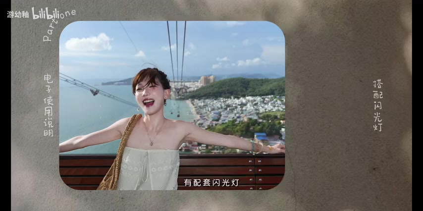
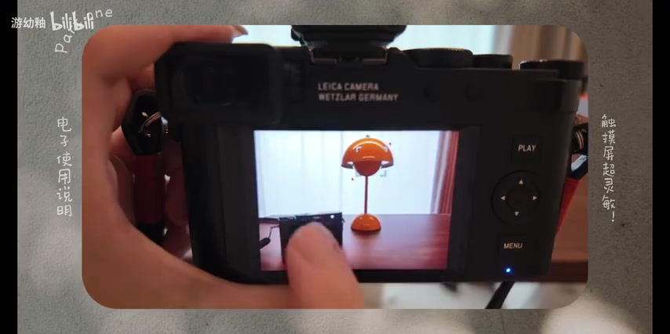
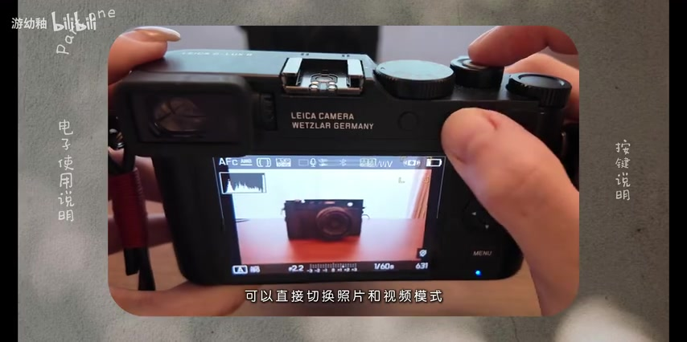
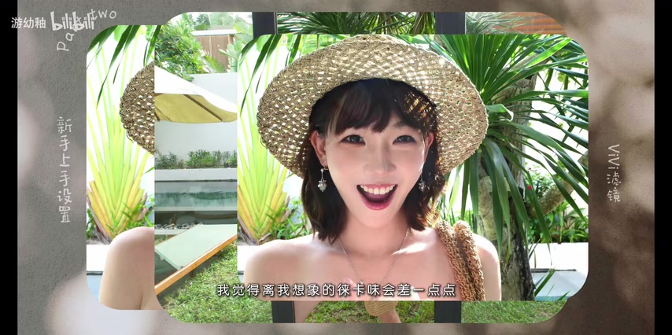
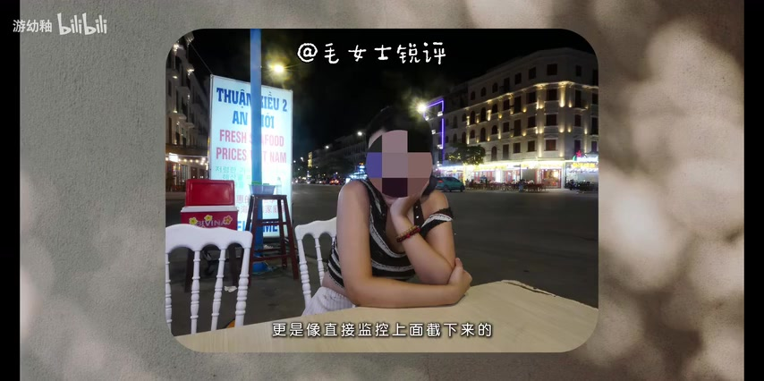
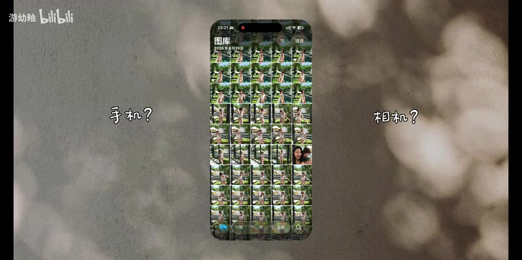
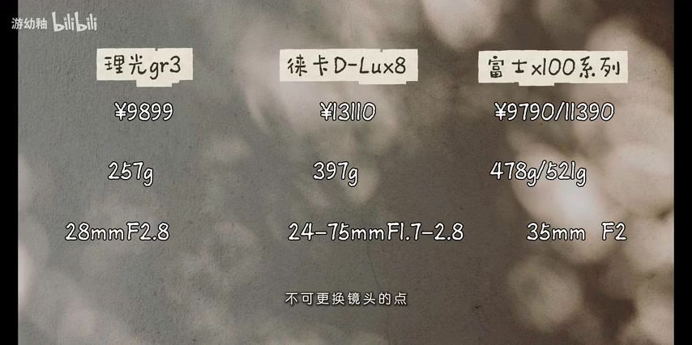
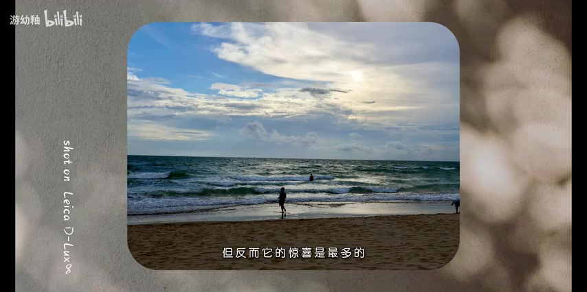

01
中文
这三台相机有点相似之处。
EN
These three cameras have quite a lot in common.
表达提示in common（相似之处）

Scene English · 相机评测 · 三机对比
Leica D-Lux 8! How to Choose Against Fuji and Ricoh
🎧 语音讲解
Opening: Three Similar Compact Cameras
情境UP主快速分享徕卡D-Lux 8，从新手快速上手的设置讲起，并拿来对比富士X100系列和理光GR3。她认为三台相机有相似之处，但网上对比不多，所以自己来做一期。语域：评测口播，轻快开场。
这三台相机有点相似之处。
These three cameras have quite a lot in common.
表达提示in common（相似之处）
可是我看到没有什么人发对比。
But I noticed barely anyone has done a comparison.
表达提示barely anyone（几乎没人）；a comparison（对比）
所以我今天会自己来做一期。
So today I'll make one myself.
表达提示make one myself（自己来做一期）
相似之处 → in common / similarities
自己来做一期 → make one myself / film my own comparison

What I Like: Lens Cap and Flash
情境开机自动打开镜头盖这点很加分，不用怕弄丢；配套闪光灯非常契合拍人像的习惯，而且不用充电，不重，不用时直接关掉。语域：评测口播，点赞清单式表达。
开机自动打开镜头盖，这样你就不用怕把镜头盖弄丢了。
The lens cap opens automatically when you power on, so you never have to worry about losing it.
表达提示lens cap（镜头盖）；power on（开机）
这个闪光灯是不用充电的。
This flash doesn't even need charging.
表达提示doesn't need charging（不用充电）
不用的时候，你就可以直接关掉。
When you're not using it, you can just switch it off.
表达提示switch it off（关掉）
不用充电 → doesn't need charging / no charging required
直接关掉 → switch it off / just turn it off

A Dial for Focal Lengths and a Responsive Touchscreen
情境通过调整波轮来控制焦段的设计非常直观方便，能快速感受当下场景适合什么焦段。触摸屏特别灵敏，点对焦、滑动、放大都很丝滑，整台相机操作简单好上手。语域：评测口播，体验描述。
通过调整波轮来控制焦段的设计，就比那些更直观更方便。
A dial that controls the focal length is more intuitive and convenient.
表达提示intuitive（直观）；convenient（方便）
它的触摸屏真的很灵敏，点对焦、滑动、放大都很丝滑。
The touchscreen is really responsive — tap-to-focus, swiping, and zooming are all buttery smooth.
表达提示responsive（灵敏）；buttery smooth（丝滑）
整台相机的操作，也是非常简单好上手的。
The whole camera is very easy to pick up and use.
表达提示easy to pick up（好上手）
直观方便 → intuitive and convenient / straightforward
丝滑 → buttery smooth / silky smooth

Button Layout: Beginner-Friendly
情境左边是快门速度，新手调到A档就好；右边是曝光补偿，轻按可调ISO。屏幕上有两个功能键：功能键1是取景器，功能键2可直接切换照片和视频模式，边走边拍很方便。Menu键可单独设置照片和视频参数。语域：评测口播，手把手教学。
新手放在自动的A档就好了。
For beginners, just set it to the auto A mode.
表达提示A mode（A档）；for beginners（对新手）
功能键2可以直接切换照片和视频模式。
Function button 2 can switch between photo and video modes directly.
表达提示function button（功能键）；switch between（切换）
边走边拍照、边拍视频，真的很方便。
Shooting photos and videos on the go is really convenient.
表达提示on the go（边走边拍）
新手 → for beginners / if you're new to cameras
边走边拍 → on the go / shooting while walking

Focus and Eye Detection
情境新手可选F单次自动对焦；拍运动中的物体用C连续对焦，相机能快速智能识别。拍人像多可以开启人眼识别。UP主还提到套了VV滤镜拍摄，但觉得差一点，可以在JPG里调整对比度和饱和度。语域：评测口播，设置讲解。
如果你在拍摄的时候有东西动来动去，相机可以快速智能地帮你识别。
If something moves while you're shooting, the camera can quickly and smartly track it.
表达提示track it（识别/追踪）
如果是想用它拍人像比较多的话，就可以开启人眼识别。
If you shoot a lot of portraits, you can turn on eye detection.
表达提示eye detection（人眼识别）；portraits（人像）
拍摄的时候降低一点曝光补偿，这样拍出来会比较有味道。
Lowering the exposure compensation a bit gives the photos more character.
表达提示exposure compensation（曝光补偿）；more character（有味道）
识别/追踪 → track it / lock onto the subject
有味道 → more character / a nicer vibe

Flaws: Limited Filters and Focus Drift
情境缺点一：不支持徕卡滤镜，只能用机内几个，有被「卡徕当」的感觉；缺点二：拍20张左右开始对不上焦；缺点三：屏幕观感像监控，暗光下更是，拍照体验不太妙。语域：评测口播，吐槽式列举。
这台相机不支持徕卡滤镜，就只能用机内这几个滤镜。
This camera doesn't support Leica profiles — you're stuck with the built-in ones.
表达提示built-in profiles（机内滤镜）
你拍20张左右，就开始有点对不上焦了。
After about 20 shots, it starts to miss focus a bit.
表达提示miss focus（对不上焦）
它的屏幕拍出来，很像一个监控。
The screen looks like a security camera feed.
表达提示a security-camera feed（监控画面）
机内滤镜 → built-in profiles / the in-camera presets
对不上焦 → miss focus / lose focus

The Blurred Line Between Phone and Camera
情境不看文件名，看不出哪些是手机拍的哪些是相机拍的。UP主以前觉得一万多的手机跟一万多的相机拍出来区别很大，但在这台相机上第一次感受到这个边界非常模糊。语域：评测口播，体验感慨。
你看得出哪些是手机拍的、哪些是相机拍的吗？
Can you tell which shots came from a phone and which from a camera?
表达提示tell which is which（分辨出来）
以前我觉得一万多的手机跟一万多的相机，拍出来有很大区别。
I used to think a ¥10,000 phone and a ¥10,000 camera made photos with a huge difference.
表达提示a huge difference（很大区别）
我在这台相机上，第一次感受到这个边界非常模糊。
With this camera, I felt for the first time that the line is really blurred.
表达提示the line is blurred（边界模糊）
分辨 → tell which is which / tell them apart
边界模糊 → the line is blurred / the boundary fades

Closing: Best as a Backup Camera
情境D-Lux 8 绝对不是一个保底的相机，更适合有其他设备时把它作为备用机。它像开盲盒一样，拍着拍着就会给你惊喜照片。想当主力机可能有点悬。一万出头可以体验徕卡风味，值不值由你判断。语域：评测口播，总结建议。
他更适合你有其他设备的情况下，把它作为备用机。
It suits you best as a backup camera when you already own other gear.
表达提示a backup camera（备用机）
他真的很像开盲盒，拍着拍着就会给你一些很惊喜的照片。
It's like opening a mystery box — keep shooting and it surprises you with great shots.
表达提示a mystery box（盲盒）；surprise you（给你惊喜）
一万出头，可以让你体验地道的徕卡风味。
For around ten thousand RMB, you get a real taste of the Leica flavor.
表达提示a real taste of（体验地道的）
备用机 → a backup camera / a second body
开盲盒 → a mystery box / a lucky dip
夸相机上手简单
说相机有丝滑触屏
吐槽屏幕观感
说手机相机差距变小
「好上手」用 pick up and use，不是 up hand。
焦段是 focal length；「调整焦段」是 control/change the focal length。
徕卡「滤镜」是 film profiles / picture profiles，不是 green mirror。
「保底相机」指不能作为唯一主力机，用 rely on as your only body 表达。